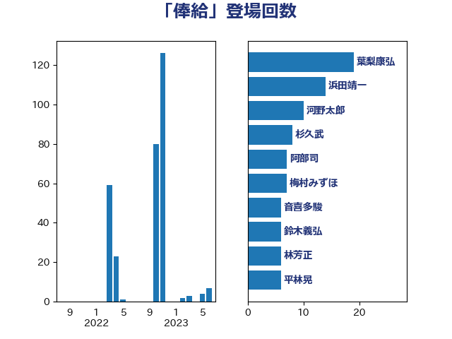

単語「俸給」

| 葉梨康弘 | 自由民主党 | 19 回 |
| 浜田靖一 | 自由民主党 | 14 回 |
| 河野太郎 | 自由民主党 | 10 回 |
| 杉久武 | 公明党 | 8 回 |
| 阿部司 | 日本維新の会 | 7 回 |
| 梅村みずほ | 日本維新の会 | 7 回 |
| 音喜多駿 | 日本維新の会 | 6 回 |
| 鈴木義弘 | 国民民主党 | 6 回 |
| 林芳正 | 自由民主党 | 6 回 |
| 平林晃 | 公明党 | 6 回 |
| 伊藤忠彦 | 自由民主党 | 6 回 |
| 金城泰邦 | 公明党 | 5 回 |
| 齋藤健 | 自由民主党 | 4 回 |
| 片山さつき | 自由民主党 | 4 回 |
| 櫛渕万里 | れいわ新選組 | 4 回 |
| 緒方林太郎 | 無所属 | 3 回 |
| 細田博之 | 自由民主党 | 3 回 |
| 石垣のりこ | 立憲民主党 | 3 回 |
| 本村伸子 | 日本共産党 | 3 回 |
| 岩谷良平 | 日本維新の会 | 3 回 |
| 三浦信祐 | 公明党 | 3 回 |
| 鈴木庸介 | 立憲民主党 | 2 回 |
| 谷合正明 | 公明党 | 2 回 |
| 西村康稔 | 自由民主党 | 2 回 |
| 藤井比早之 | 自由民主党 | 2 回 |
| 神谷宗幣 | 参政党 | 2 回 |
| 田村智子 | 日本共産党 | 2 回 |
| 沢田良 | 日本維新の会 | 2 回 |
| 榛葉賀津也 | 国民民主党 | 2 回 |
| 柴愼一 | 立憲民主党 | 2 回 |
| 新垣邦男 | 立憲民主党 | 2 回 |
| 平木大作 | 公明党 | 2 回 |
| 尾辻秀久 | 無所属 | 2 回 |
| 吉田はるみ | 立憲民主党 | 2 回 |
| 友納理緒 | 自由民主党 | 2 回 |
| 加田裕之 | 自由民主党 | 2 回 |
| 伊藤俊輔 | 立憲民主党 | 2 回 |
| 鬼木誠 | 立憲民主党 | 1 回 |
| 阿達雅志 | 自由民主党 | 1 回 |
| 鈴木敦 | 国民民主党 | 1 回 |
| 金田勝年 | 自由民主党 | 1 回 |
| 美延映夫 | 日本維新の会 | 1 回 |
| 田島麻衣子 | 立憲民主党 | 1 回 |
| 牧野たかお | 自由民主党 | 1 回 |
| 浅野哲 | 国民民主党 | 1 回 |
| 岸田文雄 | 自由民主党 | 1 回 |
| 宮本岳志 | 日本共産党 | 1 回 |
| 大西英男 | 自由民主党 | 1 回 |
| 古賀友一郎 | 自由民主党 | 1 回 |
| 加藤勝信 | 自由民主党 | 1 回 |
| 伊佐進一 | 公明党 | 1 回 |
| 仁比聡平 | 日本共産党 | 1 回 |
| 井上哲士 | 日本共産党 | 1 回 |